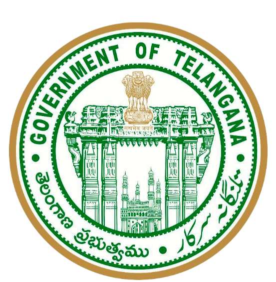
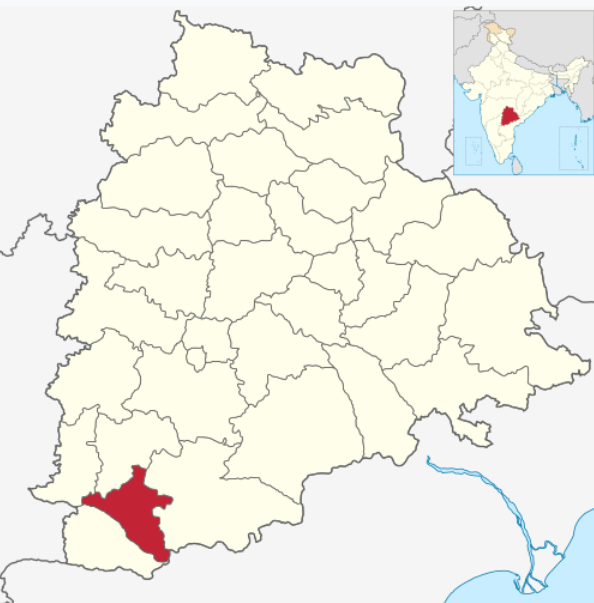

Welcome to Wanaparthy Village
A beautiful Village with rich culture and agriculture
State:TELANGANA

A beautiful Village with rich culture and agriculture
State:TELANGANA

Wanaparthy is a well-known town and district headquarters located in the southern part of Telangana, India. It has a rich historical background and was once ruled by the Wanaparthy Samsthanam, one of the prominent princely estates during the Nizam period. The town is known for its historic palace, which reflects the architectural beauty and royal heritage of the past.
Wanaparthy is surrounded by beautiful natural scenery, including lakes, agricultural fields, and green landscapes. Agriculture is the main occupation of the people, and major crops such as rice, cotton, maize, and groundnuts are grown here. The town plays an important role in the local economy and development of the region.
Wanaparthy also has many educational institutions, hospitals, temples, and public facilities that serve the needs of the people. Religious places like Sri Rangapur Temple attract visitors and devotees throughout the year.
With its combination of history, culture, agriculture, and modern development, Wanaparthy stands as an important and peaceful town in Telangana.
| District Name | Wanaparthy |
|---|---|
| State | Telangana |
| Country | India |
| District Headquarters | Wanaparthy |
| Official Language | Telugu |
| Main Occupation | Agriculture |
| Famous Places | Wanaparthy Palace, Sri Rangapur Temple |
| State Formation | 2016 (District Formation) |